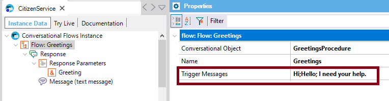
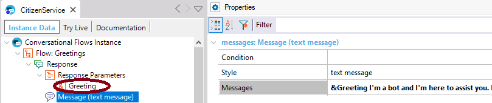
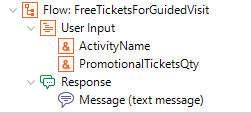
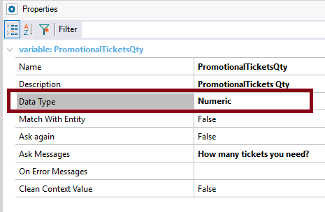
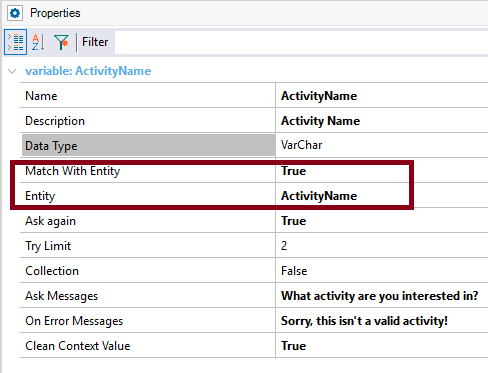

Specifies the trigger messages for this flow. You can type multiple messages using the ‘;’ delimiter. Scope Objects: Conversational Flows Description
Trigger Messages of the Flow help train the AI engine to recognize the intents in the user's query. Trigger messages can include a reference to an entity, which is represented as &EntityName.
This has two purposes:
See the examples below. Samples
I. The "Greetings" Flow of a conversational instance can be defined as follows. The Trigger messages are the following:  When the intent is detected, the Flow is executed as it has been modeled. parm(out:&Greeting);
&datetime = now()
if &datetime.Hour() >= 12
&Greeting =!"Good afternoon!"
else
&Greeting = !"Good morning"
endif
In order to display the greeting to the end user, the Messages property uses the &Greeting contextual parameter.  II. Using entity references in the Trigger Messages. Suppose that you have the following Flow, where the intent is to ask for free tickets for an activity or to visit a place in the city.  One Trigger Message is the following: "I need &numeric tickets for a guided visit to &ActivityName:{Solis Theater}" &numeric refers to the "PromotionalTicketsQty" User Input which is of numeric data type:  &ActivityName refers to the "ActivityName" User Input, which has match With Entity property = TRUE, and entity property = ActivityName.  So when the user says: "I want 3 tickets for a guided visit to Solis Theater," the "PromotionalTicketsQty" value is automatically inferred as well as the "ActivityName," without the need to prompt him for this information. See Also
|